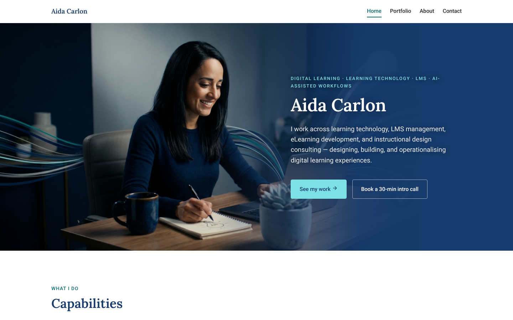
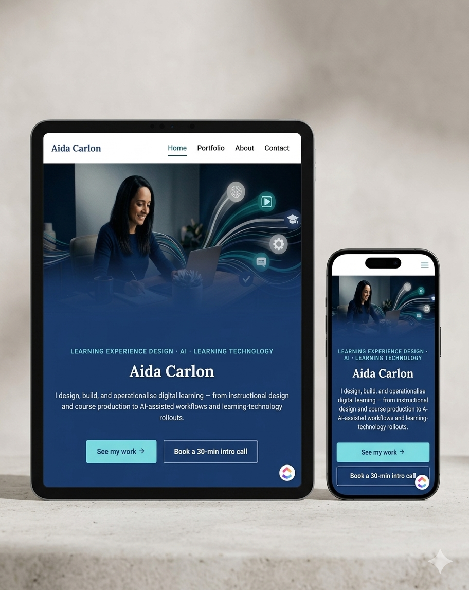
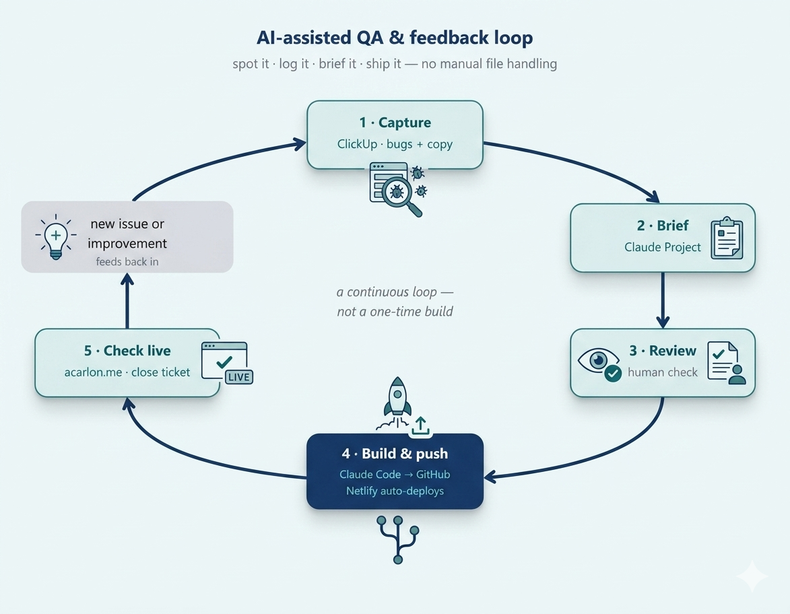
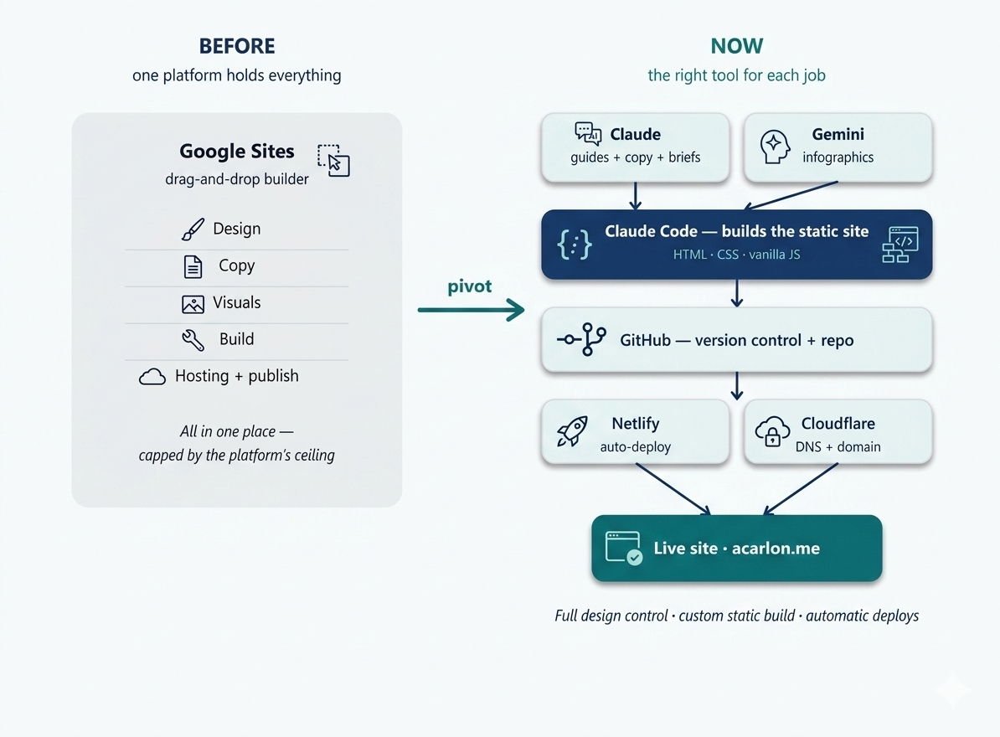
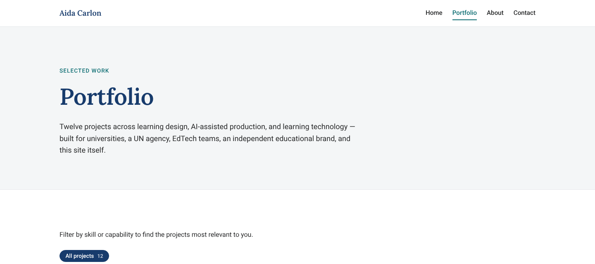
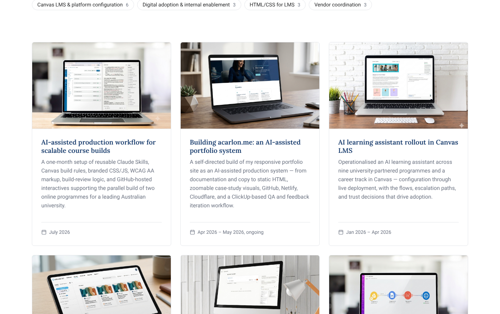
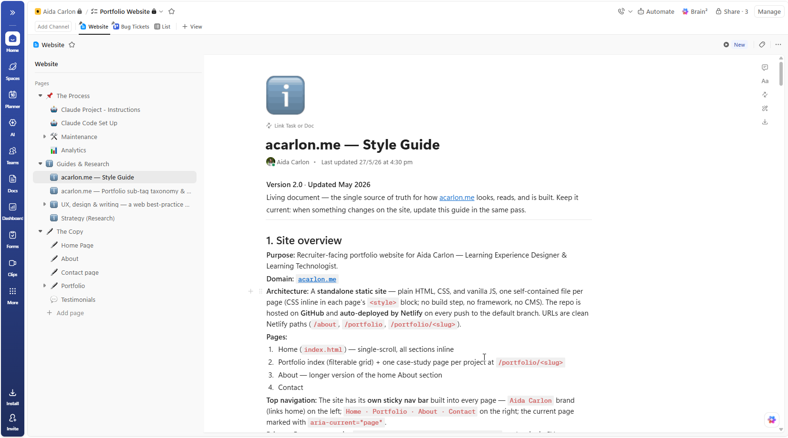

acarlon.me · portfolio build
1 · The site
2 · Workflow
3 · Structure
4 · Research & guides

acarlon.me.
Static HTML, CSS and vanilla JS; responsive across desktop, tablet and mobile.

Tablet and phone.
Same content, adapted layout.

The maintenance loop.
Spot it, log it, brief it, ship it. No manual file handling.
AI for defined tasks
Claude
: research, documentation, build briefs.
Claude Code
: development and updates, working in the GitHub repo.
Perplexity / Gemini
: selected visuals and copy.
Representative samples
built on GitHub where original work is under IP restrictions: slides, walkthroughs, landing pages.
Every output reviewed
so writing, design and presentation stay mine.
Netlify
deploys each push; copy and design changes follow the same route as the first build.

Before and now.
One platform replaced by the right tool for each job.


Four pages, twelve case studies.
Filter by capability; each card opens a case study.
From research to guidelines
Portfolio best practice
researched in a Claude Project: how to present capabilities, projects and evidence.
Brand style guide
: palette, type, imagery, tone.
UX guidelines
: navigation, card patterns, responsive rules, image zoom on small screens.
Writing guide
: project labels, case-study structure (overview · challenge · approach · impact).
Copy and feedback
live in a ClickUp space the Project connects to.

ClickUp space.
Process, guides and research, copy, bug tickets, all in one place.